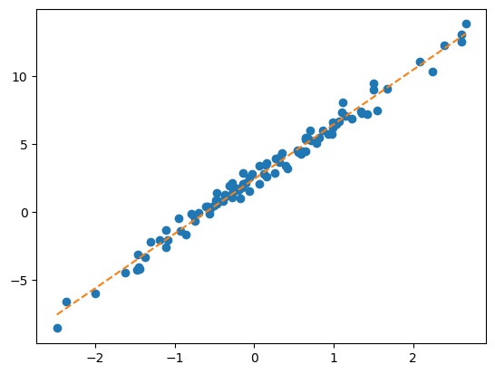
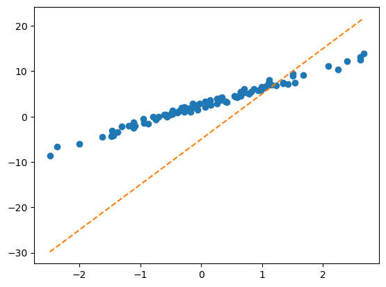

import torch
import pandas as pd
import matplotlib.pyplot as plt
import random
import numpy as npDeep Learning 6
1. Imports
2. 예비학습:optimizer 사용 고급
x,_ = torch.randn(100).sort()
x,_으로 변수명을 받는 이유는 pytorch에서는 .sort()를 할 때 결과값으로 random으로 생성된 100개의 난수 말고 도 정렬하기 전 인덱스를 출력한다.
그 인덱스를 없애주기 위해서 _변수로 튜플 언패킹으로 받아주는 것이다.
torch.manual_seed(43052)
x,_ = torch.randn(100).sort()
x = x.reshape(-1,1)
ones= torch.ones(100).reshape(-1,1)
X = torch.concat([ones,x],axis=-1)
ϵ = torch.randn(100).reshape(-1,1)*0.5
y = 2.5+ 4*x + ϵplt.plot(x,y,'o')
What = torch.tensor([[-5.0],[10.0]],requires_grad=True)plt.plot(x,y,'o')
plt.plot(x,X@What.data,'--')
loss_fn = torch.nn.MSELoss()
optimizr = torch.optim.SGD([What],lr=0.1)
for epoc in range(30):
yhat = X@What
loss = loss_fn(yhat,y)
loss.backward()
optimizr.step()
optimizr.zero_grad()plt.plot(x,y,'o')
plt.plot(x,X@What.data,'--')
w = torch.tensor(10.0,requires_grad = True)
b = torch.tensor(-5.0,requires_grad = True)plt.plot(x,y,'o')
plt.plot(x,(x*w+b).data,'--')
loss_fn = torch.nn.MSELoss()
optimizr = torch.optim.SGD([w,b],lr=0.1)
for epoc in range(30):
yhat = x*w+b
loss = loss_fn(yhat,y)
loss.backward()
optimizr.step()
optimizr.zero_grad()plt.plot(x,y,'o')
plt.plot(x,(x*w+b).data,'--')
- 내가 업데이트 하고싶은 것을 리스트 형태로 받아주고 학습시키면 된다.
3.MF-based 추천시스템
A. 나는 SOLO
df_view = pd.read_csv('https://raw.githubusercontent.com/guebin/DL2024/main/posts/solo.csv',index_col=0)
df_view| 영식(IN) | 영철(IN) | 영호(IS) | 광수(IS) | 상철(EN) | 영수(EN) | 규빈(ES) | 다호(ES) | |
|---|---|---|---|---|---|---|---|---|
| 옥순(IN) | NaN | 4.02 | 3.45 | 3.42 | 0.84 | 1.12 | 0.43 | 0.49 |
| 영자(IN) | 3.93 | 3.99 | 3.63 | 3.43 | 0.98 | 0.96 | 0.52 | NaN |
| 정숙(IS) | 3.52 | 3.42 | 4.05 | 4.06 | 0.39 | NaN | 0.93 | 0.99 |
| 영숙(IS) | 3.43 | 3.57 | NaN | 3.95 | 0.56 | 0.52 | 0.89 | 0.89 |
| 순자(EN) | 1.12 | NaN | 0.59 | 0.43 | 4.01 | 4.16 | 3.52 | 3.38 |
| 현숙(EN) | 0.94 | 1.05 | 0.32 | 0.45 | 4.02 | 3.78 | NaN | 3.54 |
| 서연(ES) | 0.51 | 0.56 | 0.88 | 0.89 | 3.50 | 3.64 | 4.04 | 4.10 |
| 보람(ES) | 0.48 | 0.51 | 1.03 | NaN | 3.52 | 4.00 | 3.82 | NaN |
| 하니(I) | 4.85 | 4.82 | NaN | 4.98 | 4.53 | 4.39 | 4.45 | 4.52 |
- 데이터 이해를 위한 가정
5점 만점으로 궁합이 좋을수록 점수가 높다. 최저점은 0점
MBTI 성향에 따라서 궁합의 정도가 다르다. 특히 I/E의 성향일치가 중요하다.
하니는 모든 사람들과 대체로 궁합이 좋다.
하니는 I성향의 사람들과 좀 더 잘 맞는다.
B. Fit / Predict
- 목표 : Nan을 추정
(1) 옥순(IN)과 영식(IN)의 궁합
옥순성향 = torch.tensor([1.22,0.49]).reshape(1,2)
옥순매력 = torch.tensor(1.21)
영식성향 = torch.tensor([1.20,0.5]).reshape(1,2)
영식매력 = torch.tensor(1.2)
((옥순성향*영식성향).sum() + 옥순매력 + 영식매력) # 옥순과 영식의 궁합: a ∘ b 로 내적구함 + 이후에 매력을 더함
(옥순성향 @ 영식성향.T + 옥순매력 + 영식매력) # 옥순과 영식의 궁합: a.T @ b 로 내적구함 + 이후에 매력을 더함tensor([[4.1190]])(2) 영자(IN)와 다호(ES)의 궁합
영자성향 = torch.tensor([1.17,0.44]).reshape(1,2)
영자매력 = torch.tensor(1.25).reshape(1,1)
다호성향 = torch.tensor([-1.22,-0.6]).reshape(1,2)
다호매력 = torch.tensor(1.15).reshape(1,1)
((영자성향*다호성향).sum() + 영자성향 + 다호성향)
(영자성향 @ 다호성향.T + 영자매력 + 다호매력)tensor([[0.7086]])(3) 하니(I)와 영호(IS)의 궁합
하니성향 = torch.tensor([0.2,0]).reshape(1,2)
하니매력 = torch.tensor(3.6)
영호성향 = torch.tensor([1.23,-0.7]).reshape(1,2)
영호매력 = torch.tensor(1.11)
((하니성향 * 영호성향).sum() + 하니매력 + 영호매력)
하니성향 @ 영호성향.T + 하니매력 + 영호매력tensor([[4.9560]])- 여자의 전체 설정값
옥순성향 = torch.tensor([1.22,0.49]).reshape(1,2)
영자성향 = torch.tensor([1.17,0.44]).reshape(1,2)
정숙성향 = torch.tensor([1.21,-0.45]).reshape(1,2)
영숙성향 = torch.tensor([1.20,-0.50]).reshape(1,2)
순자성향 = torch.tensor([-1.20,0.51]).reshape(1,2)
현숙성향 = torch.tensor([-1.23,0.48]).reshape(1,2)
서연성향 = torch.tensor([-1.20,-0.48]).reshape(1,2)
보람성향 = torch.tensor([-1.19,-0.49]).reshape(1,2)
하니성향 = torch.tensor([0.2,0]).reshape(1,2)
W = torch.concat([옥순성향,영자성향,정숙성향,영숙성향,순자성향,현숙성향,서연성향,보람성향,하니성향])
b1 = torch.tensor([1.21,1.25,1.10,1.11,1.12,1.13,1.14,1.12,3.6]).reshape(-1,1)
W,b1(tensor([[ 1.2200, 0.4900],
[ 1.1700, 0.4400],
[ 1.2100, -0.4500],
[ 1.2000, -0.5000],
[-1.2000, 0.5100],
[-1.2300, 0.4800],
[-1.2000, -0.4800],
[-1.1900, -0.4900],
[ 0.2000, 0.0000]]),
tensor([[1.2100],
[1.2500],
[1.1000],
[1.1100],
[1.1200],
[1.1300],
[1.1400],
[1.1200],
[3.6000]]))- 남자의 전체 설정값
영식성향 = torch.tensor([1.20,0.5]).reshape(1,2)
영철성향 = torch.tensor([1.22,0.45]).reshape(1,2)
영호성향 = torch.tensor([1.23,-0.7]).reshape(1,2)
광수성향 = torch.tensor([1.21,-0.6]).reshape(1,2)
상철성향 = torch.tensor([-1.28,0.6]).reshape(1,2)
영수성향 = torch.tensor([-1.24,0.5]).reshape(1,2)
규빈성향 = torch.tensor([-1.20,-0.5]).reshape(1,2)
다호성향 = torch.tensor([-1.22,-0.6]).reshape(1,2)
M = torch.concat([영식성향,영철성향,영호성향,광수성향,상철성향,영수성향,규빈성향,다호성향]) # 각 column은 남성출연자의 성향을 의미함
b2 = torch.tensor([1.2,1.10,1.11,1.25,1.18,1.11,1.15,1.15]).reshape(-1,1)
M,b2(tensor([[ 1.2000, 0.5000],
[ 1.2200, 0.4500],
[ 1.2300, -0.7000],
[ 1.2100, -0.6000],
[-1.2800, 0.6000],
[-1.2400, 0.5000],
[-1.2000, -0.5000],
[-1.2200, -0.6000]]),
tensor([[1.2000],
[1.1000],
[1.1100],
[1.2500],
[1.1800],
[1.1100],
[1.1500],
[1.1500]]))W@M.T + (b1 + b2.T)tensor([[4.1190, 4.0189, 3.4776, 3.6422, 1.1224, 1.0522, 0.6510, 0.5776],
[4.0740, 3.9754, 3.4911, 3.6517, 1.1964, 1.1292, 0.7760, 0.7086],
[3.5270, 3.4737, 4.0133, 4.0841, 0.4612, 0.4846, 1.0230, 1.0438],
[3.5000, 3.4490, 4.0460, 4.1120, 0.4540, 0.4820, 1.0700, 1.0960],
[1.1350, 0.9855, 0.3970, 0.6120, 4.1420, 3.9730, 3.4550, 3.4280],
[1.0940, 0.9454, 0.3911, 0.6037, 4.1724, 4.0052, 3.5160, 3.4926],
[0.6600, 0.5600, 1.1100, 1.2260, 3.5680, 3.4980, 3.9700, 4.0420],
[0.6470, 0.5477, 1.1093, 1.2241, 3.5292, 3.4606, 3.9430, 4.0158],
[5.0400, 4.9440, 4.9560, 5.0920, 4.5240, 4.4620, 4.5100, 4.5060]])- 그렇다면 Nan값의 부분을 제외한 나머지 부분을 잘 맞춘다면 Nan부분도 잘 맞을테니까 그 부분에 Nan을 넣으면 되겠다.
1 yhat을 어떻게 구하지? (여성특징 * 남성특징).sum() + 남성bias + 여성bias??
2 그럼 여성특징, 남성특징, 여성매력, 남성매력은 어떻게 구하지? 생각해보니 데이터에서 주어진 것은 모든 것이 합쳐진 궁합의 점수가 나왔지 각각의 점수가 나오진 않았다
3 그 전에는 어떻게 했지? W를 보고 적당히 특징을 찾거나 상상해서 여성특징, 여성bias의 값을 때려넣음 M를 보고 적당히 특징을 찾거나 상상해서 남성특징, 남성bias의 값을 때려넣음
4 자동화하려면? W \(\to\) 여성특징, 여성bias / M \(\to\) 남성특징, 남성bias인 함수를 만들자
5 y와 yhat의 차이를 loss로 잡고 loss.backward()후 더 나은 값들로 update를 해주면 된다.
6 구상은 다 했고 이제 뭘 해야하지? 먼저 4에 해당하는 함수를 만들어야한다.
옥순 \(\to\) 옥순의 특징 = (1.22,0.49)
옥순 \(\to\) 옥순의 매력 = 1.22
영철 \(\to\) 영철의 특징 = (1.22,0.45)…
7 epoc을 돌리기 위한 step1~4를 하면 된다.
C. 6의 구현 - 함수 생성
df_view| 영식(IN) | 영철(IN) | 영호(IS) | 광수(IS) | 상철(EN) | 영수(EN) | 규빈(ES) | 다호(ES) | |
|---|---|---|---|---|---|---|---|---|
| 옥순(IN) | NaN | 4.02 | 3.45 | 3.42 | 0.84 | 1.12 | 0.43 | 0.49 |
| 영자(IN) | 3.93 | 3.99 | 3.63 | 3.43 | 0.98 | 0.96 | 0.52 | NaN |
| 정숙(IS) | 3.52 | 3.42 | 4.05 | 4.06 | 0.39 | NaN | 0.93 | 0.99 |
| 영숙(IS) | 3.43 | 3.57 | NaN | 3.95 | 0.56 | 0.52 | 0.89 | 0.89 |
| 순자(EN) | 1.12 | NaN | 0.59 | 0.43 | 4.01 | 4.16 | 3.52 | 3.38 |
| 현숙(EN) | 0.94 | 1.05 | 0.32 | 0.45 | 4.02 | 3.78 | NaN | 3.54 |
| 서연(ES) | 0.51 | 0.56 | 0.88 | 0.89 | 3.50 | 3.64 | 4.04 | 4.10 |
| 보람(ES) | 0.48 | 0.51 | 1.03 | NaN | 3.52 | 4.00 | 3.82 | NaN |
| 하니(I) | 4.85 | 4.82 | NaN | 4.98 | 4.53 | 4.39 | 4.45 | 4.52 |
- dataframe의 변형
df_train = df_view.stack().reset_index().set_axis(['W','M','y'],axis=1)
df_train| W | M | y | |
|---|---|---|---|
| 0 | 옥순(IN) | 영철(IN) | 4.02 |
| 1 | 옥순(IN) | 영호(IS) | 3.45 |
| 2 | 옥순(IN) | 광수(IS) | 3.42 |
| 3 | 옥순(IN) | 상철(EN) | 0.84 |
| 4 | 옥순(IN) | 영수(EN) | 1.12 |
| ... | ... | ... | ... |
| 58 | 하니(I) | 광수(IS) | 4.98 |
| 59 | 하니(I) | 상철(EN) | 4.53 |
| 60 | 하니(I) | 영수(EN) | 4.39 |
| 61 | 하니(I) | 규빈(ES) | 4.45 |
| 62 | 하니(I) | 다호(ES) | 4.52 |
63 rows × 3 columns
- 이름을 숫자화
w = {'옥순(IN)':0, '영자(IN)':1, '정숙(IS)':2, '영숙(IS)':3, '순자(EN)':4, '현숙(EN)':5, '서연(ES)':6, '보람(ES)':7, '하니(I)':8}
m = {'영식(IN)':0, '영철(IN)':1, '영호(IS)':2, '광수(IS)':3, '상철(EN)':4, '영수(EN)':5, '규빈(ES)':6, '다호(ES)':7}df_train['X1'] = df_train['W'].map(w)
df_train['X2'] = df_train['M'].map(m)
df_train| W | M | y | X1 | X2 | |
|---|---|---|---|---|---|
| 0 | 옥순(IN) | 영철(IN) | 4.02 | 0 | 1 |
| 1 | 옥순(IN) | 영호(IS) | 3.45 | 0 | 2 |
| 2 | 옥순(IN) | 광수(IS) | 3.42 | 0 | 3 |
| 3 | 옥순(IN) | 상철(EN) | 0.84 | 0 | 4 |
| 4 | 옥순(IN) | 영수(EN) | 1.12 | 0 | 5 |
| ... | ... | ... | ... | ... | ... |
| 58 | 하니(I) | 광수(IS) | 4.98 | 8 | 3 |
| 59 | 하니(I) | 상철(EN) | 4.53 | 8 | 4 |
| 60 | 하니(I) | 영수(EN) | 4.39 | 8 | 5 |
| 61 | 하니(I) | 규빈(ES) | 4.45 | 8 | 6 |
| 62 | 하니(I) | 다호(ES) | 4.52 | 8 | 7 |
63 rows × 5 columns
- 텐서화 + one_hot-encoding
y = torch.tensor(df_train['y']).float()
X1 = torch.tensor(df_train['X1'])
X2 = torch.tensor(df_train['X2'])
E1 = torch.nn.functional.one_hot(X1).float()
E2 = torch.nn.functional.one_hot(X2).float()print(f"y.shape: {y.shape},\t y.dtype: {y.dtype}")
print(f"X1.shape: {X1.shape},\t X1.dtype: {X1.dtype} // X1.unique: {X1.unique()}")
print(f"X2.shape: {X2.shape},\t X2.dtype: {X2.dtype} // X2.unique: {X2.unique()}")
print(f"E1.shape: {E1.shape},\t E1.dtype: {E1.dtype} -- shape에서 9는 여성이 9명이라는 의미")
print(f"E2.shape: {E2.shape},\t E2.dtype: {E2.dtype} -- shape에서 8은 남성이 8명이라는 의미")y.shape: torch.Size([63]), y.dtype: torch.float32
X1.shape: torch.Size([63]), X1.dtype: torch.int64 // X1.unique: tensor([0, 1, 2, 3, 4, 5, 6, 7, 8])
X2.shape: torch.Size([63]), X2.dtype: torch.int64 // X2.unique: tensor([0, 1, 2, 3, 4, 5, 6, 7])
E1.shape: torch.Size([63, 9]), E1.dtype: torch.float32 -- shape에서 9는 여성이 9명이라는 의미
E2.shape: torch.Size([63, 8]), E2.dtype: torch.float32 -- shape에서 8은 남성이 8명이라는 의미l1 = torch.nn.Linear(9,2,bias=False)
b1 = torch.nn.Linear(9,1,bias=False)
l2 = torch.nn.Linear(8,2,bias=False)
b2 = torch.nn.Linear(8,1,bias=False)D. 7의 구현 - step1~4 수행
- step1 : yhat을 구하자
torch.manual_seed(21345)
l1 = torch.nn.Linear(9,2,bias=False)
b1 = torch.nn.Linear(9,1,bias=False)
l2 = torch.nn.Linear(8,2,bias=False)
b2 = torch.nn.Linear(8,1,bias=False)
W_feartures = l1(E1)
W_bias = b1(E1)
M_feartures = l2(E2)
M_bias = b2(E2)sig = torch.nn.Sigmoid()
score = (W_feartures * M_feartures).sum(axis=1).reshape(-1,1) + W_bias + M_bias
yhat = sig(score) * 5- step2 : 손실계산
loss_fn = torch.nn.MSELoss()
loss = loss_fn(yhat,y)/root/anaconda3/envs/torch/lib/python3.12/site-packages/torch/nn/modules/loss.py:535: UserWarning: Using a target size (torch.Size([63])) that is different to the input size (torch.Size([63, 1])). This will likely lead to incorrect results due to broadcasting. Please ensure they have the same size.
return F.mse_loss(input, target, reduction=self.reduction)- step3 : 미분
(미분전)
l1.weight.data , b1.weight.data , l2.weight.data , b2.weight.data(tensor([[ 0.2862, 0.0305, 0.2883, 0.1300, 0.0214, 0.1566, -0.2712, -0.2259,
0.1584],
[ 0.2416, 0.3247, 0.0731, 0.1431, -0.2673, -0.0753, 0.0428, -0.2460,
0.2979]]),
tensor([[ 0.0574, 0.2875, -0.0112, 0.1881, 0.1786, -0.1876, 0.1947, 0.1514,
0.2904]]),
tensor([[ 0.0118, 0.0754, 0.2837, -0.1152, -0.3053, 0.2444, -0.0010, -0.0854],
[-0.2651, -0.1892, -0.1229, 0.2027, 0.1869, 0.2188, 0.1728, 0.0379]]),
tensor([[ 0.0776, 0.2288, 0.2265, -0.2496, -0.3322, 0.2682, 0.1394, -0.3488]]))l1.weight.grad , b1.weight.grad , l2.weight.grad , b2.weight.grad(None, None, None, None)(미분후)
loss.backward()l1.weight.data , b1.weight.data , l2.weight.data , b2.weight.data(tensor([[ 0.2862, 0.0305, 0.2883, 0.1300, 0.0214, 0.1566, -0.2712, -0.2259,
0.1584],
[ 0.2416, 0.3247, 0.0731, 0.1431, -0.2673, -0.0753, 0.0428, -0.2460,
0.2979]]),
tensor([[ 0.0574, 0.2875, -0.0112, 0.1881, 0.1786, -0.1876, 0.1947, 0.1514,
0.2904]]),
tensor([[ 0.0118, 0.0754, 0.2837, -0.1152, -0.3053, 0.2444, -0.0010, -0.0854],
[-0.2651, -0.1892, -0.1229, 0.2027, 0.1869, 0.2188, 0.1728, 0.0379]]),
tensor([[ 0.0776, 0.2288, 0.2265, -0.2496, -0.3322, 0.2682, 0.1394, -0.3488]]))l1.weight.grad , b1.weight.grad , l2.weight.grad , b2.weight.grad(tensor([[ 0.0175, 0.0141, 0.0139, 0.0106, 0.0152, 0.0152, 0.0121, 0.0122,
0.0091],
[-0.0030, 0.0006, -0.0103, -0.0007, -0.0039, -0.0091, -0.0027, -0.0055,
0.0025]]),
tensor([[ 0.0216, 0.1110, -0.0177, 0.0512, 0.0416, -0.0646, 0.0722, 0.0682,
0.0850]]),
tensor([[-0.0021, 0.0044, 0.0023, -0.0093, -0.0132, 0.0070, 0.0047, -0.0134],
[ 0.0035, 0.0157, 0.0029, 0.0026, -0.0002, 0.0176, 0.0136, -0.0030]]),
tensor([[ 0.0780, 0.1257, 0.1090, -0.0452, -0.0912, 0.1570, 0.1201, -0.0850]]))- step4 : update
params = list(l1.parameters()) + list(l2.parameters()) + list(b1.parameters()) + list(b2.parameters())
optimizr = torch.optim.Adam(params , lr=0.1)update전
l1.weight.data, b1.weight.data, l2.weight.data, b2.weight.data(tensor([[ 0.2862, 0.0305, 0.2883, 0.1300, 0.0214, 0.1566, -0.2712, -0.2259,
0.1584],
[ 0.2416, 0.3247, 0.0731, 0.1431, -0.2673, -0.0753, 0.0428, -0.2460,
0.2979]]),
tensor([[ 0.0574, 0.2875, -0.0112, 0.1881, 0.1786, -0.1876, 0.1947, 0.1514,
0.2904]]),
tensor([[ 0.0118, 0.0754, 0.2837, -0.1152, -0.3053, 0.2444, -0.0010, -0.0854],
[-0.2651, -0.1892, -0.1229, 0.2027, 0.1869, 0.2188, 0.1728, 0.0379]]),
tensor([[ 0.0776, 0.2288, 0.2265, -0.2496, -0.3322, 0.2682, 0.1394, -0.3488]]))l1.weight.grad, b1.weight.grad, l2.weight.grad, b2.weight.grad(tensor([[ 0.0175, 0.0141, 0.0139, 0.0106, 0.0152, 0.0152, 0.0121, 0.0122,
0.0091],
[-0.0030, 0.0006, -0.0103, -0.0007, -0.0039, -0.0091, -0.0027, -0.0055,
0.0025]]),
tensor([[ 0.0216, 0.1110, -0.0177, 0.0512, 0.0416, -0.0646, 0.0722, 0.0682,
0.0850]]),
tensor([[-0.0021, 0.0044, 0.0023, -0.0093, -0.0132, 0.0070, 0.0047, -0.0134],
[ 0.0035, 0.0157, 0.0029, 0.0026, -0.0002, 0.0176, 0.0136, -0.0030]]),
tensor([[ 0.0780, 0.1257, 0.1090, -0.0452, -0.0912, 0.1570, 0.1201, -0.0850]]))update
optimizr.step()l1.weight.data, b1.weight.data, l2.weight.data, b2.weight.data(tensor([[ 0.1862, -0.0695, 0.1883, 0.0300, -0.0786, 0.0566, -0.3712, -0.3259,
0.0584],
[ 0.3416, 0.2247, 0.1731, 0.2431, -0.1673, 0.0247, 0.1428, -0.1460,
0.1979]]),
tensor([[-0.0426, 0.1875, 0.0888, 0.0881, 0.0786, -0.0876, 0.0947, 0.0514,
0.1904]]),
tensor([[ 0.1118, -0.0246, 0.1837, -0.0152, -0.2053, 0.1444, -0.1010, 0.0146],
[-0.3651, -0.2892, -0.2229, 0.1027, 0.2869, 0.1188, 0.0728, 0.1379]]),
tensor([[-0.0224, 0.1288, 0.1265, -0.1496, -0.2322, 0.1682, 0.0394, -0.2488]]))l1.weight.grad, b1.weight.grad, l2.weight.grad, b2.weight.grad(tensor([[ 0.0175, 0.0141, 0.0139, 0.0106, 0.0152, 0.0152, 0.0121, 0.0122,
0.0091],
[-0.0030, 0.0006, -0.0103, -0.0007, -0.0039, -0.0091, -0.0027, -0.0055,
0.0025]]),
tensor([[ 0.0216, 0.1110, -0.0177, 0.0512, 0.0416, -0.0646, 0.0722, 0.0682,
0.0850]]),
tensor([[-0.0021, 0.0044, 0.0023, -0.0093, -0.0132, 0.0070, 0.0047, -0.0134],
[ 0.0035, 0.0157, 0.0029, 0.0026, -0.0002, 0.0176, 0.0136, -0.0030]]),
tensor([[ 0.0780, 0.1257, 0.1090, -0.0452, -0.0912, 0.1570, 0.1201, -0.0850]]))zero_grad
optimizr.zero_grad()l1.weight.data, b1.weight.data, l2.weight.data, b2.weight.data(tensor([[ 0.1862, -0.0695, 0.1883, 0.0300, -0.0786, 0.0566, -0.3712, -0.3259,
0.0584],
[ 0.3416, 0.2247, 0.1731, 0.2431, -0.1673, 0.0247, 0.1428, -0.1460,
0.1979]]),
tensor([[-0.0426, 0.1875, 0.0888, 0.0881, 0.0786, -0.0876, 0.0947, 0.0514,
0.1904]]),
tensor([[ 0.1118, -0.0246, 0.1837, -0.0152, -0.2053, 0.1444, -0.1010, 0.0146],
[-0.3651, -0.2892, -0.2229, 0.1027, 0.2869, 0.1188, 0.0728, 0.1379]]),
tensor([[-0.0224, 0.1288, 0.1265, -0.1496, -0.2322, 0.1682, 0.0394, -0.2488]]))l1.weight.grad, b1.weight.grad, l2.weight.grad, b2.weight.grad(None, None, None, None)E. 코드정리
df_view = pd.read_csv('https://raw.githubusercontent.com/guebin/DL2024/main/posts/solo.csv',index_col=0)
df_train = df_view.stack().reset_index().set_axis(['W','M','y'],axis=1)
w = {'옥순(IN)':0, '영자(IN)':1, '정숙(IS)':2, '영숙(IS)':3, '순자(EN)':4, '현숙(EN)':5, '서연(ES)':6, '보람(ES)':7, '하니(I)':8}
m = {'영식(IN)':0, '영철(IN)':1, '영호(IS)':2, '광수(IS)':3, '상철(EN)':4, '영수(EN)':5, '규빈(ES)':6, '다호(ES)':7}
X1 = torch.tensor(df_train['W'].map(w)) # length-n vector
X2 = torch.tensor(df_train['M'].map(m)) # length-n vector
E1 = torch.nn.functional.one_hot(X1).float()
E2 = torch.nn.functional.one_hot(X2).float()
y = torch.tensor(df_train['y']).float().reshape(-1,1)
#--#
torch.manual_seed(21345)
l1 = torch.nn.Linear(in_features=9, out_features=2, bias=False)
b1 = torch.nn.Linear(in_features=9, out_features=1, bias=False)
l2 = torch.nn.Linear(in_features=8, out_features=2, bias=False)
b2 = torch.nn.Linear(in_features=8, out_features=1, bias=False)
sig = torch.nn.Sigmoid()
loss_fn = torch.nn.MSELoss()
params = list(l1.parameters())+list(b1.parameters())+list(l2.parameters())+list(b2.parameters())
optimizr = torch.optim.Adam(params, lr=0.1)
#--#
for epoc in range(100):
## step1
W_features = l1(E1)
W_bias = b1(E1)
M_features = l2(E2)
M_bias = b2(E2)
score = (W_features * M_features).sum(axis=1).reshape(-1,1) + W_bias + M_bias
yhat = sig(score) * 5
## step2
loss = loss_fn(yhat,y)
## step3
loss.backward()
## step4
optimizr.step()
optimizr.zero_grad()torch.concat([yhat,y],axis=1)[::4] # 꽤 잘맞음tensor([[4.0965, 4.0200],
[0.9562, 1.1200],
[3.9986, 3.9900],
[0.9538, 0.9600],
[4.1112, 4.0500],
[0.9660, 0.9900],
[0.5756, 0.5600],
[1.1270, 1.1200],
[4.0830, 4.1600],
[1.0020, 1.0500],
[3.9902, 3.7800],
[0.9060, 0.8800],
[3.9527, 4.0400],
[0.9539, 1.0300],
[4.8095, 4.8500],
[4.4280, 4.3900]], grad_fn=<SliceBackward0>)F. 모형의 해석 - 쉬운 경우
df_match = pd.DataFrame((W_features*M_features).data).set_axis(['잠재특징궁합1','잠재특징궁합2'],axis=1)
df_bias = pd.DataFrame(torch.concat([W_bias, M_bias],axis=1).data).set_axis(['여성bias','남성bias'],axis=1)
df_features = pd.concat([df_train.loc[:,'W':'M'],df_match,df_bias],axis=1)
df_features[:56]| W | M | 잠재특징궁합1 | 잠재특징궁합2 | 여성bias | 남성bias | |
|---|---|---|---|---|---|---|
| 0 | 옥순(IN) | 영철(IN) | 1.715036 | -0.005762 | -0.516387 | 0.318762 |
| 1 | 옥순(IN) | 영호(IS) | 1.449594 | -0.253216 | -0.516387 | 0.139160 |
| 2 | 옥순(IN) | 광수(IS) | 1.433762 | -0.259794 | -0.516387 | 0.062099 |
| 3 | 옥순(IN) | 상철(EN) | -1.301104 | -0.058262 | -0.516387 | 0.386921 |
| 4 | 옥순(IN) | 영수(EN) | -1.338332 | -0.091116 | -0.516387 | 0.503820 |
| 5 | 옥순(IN) | 규빈(ES) | -1.587567 | -0.244833 | -0.516387 | 0.233090 |
| 6 | 옥순(IN) | 다호(ES) | -1.654613 | -0.271469 | -0.516387 | 0.318994 |
| 7 | 영자(IN) | 영식(IN) | 1.740016 | -0.001178 | -0.620071 | 0.235756 |
| 8 | 영자(IN) | 영철(IN) | 1.686631 | -0.000798 | -0.620071 | 0.318762 |
| 9 | 영자(IN) | 영호(IS) | 1.425585 | -0.035055 | -0.620071 | 0.139160 |
| 10 | 영자(IN) | 광수(IS) | 1.410015 | -0.035966 | -0.620071 | 0.062099 |
| 11 | 영자(IN) | 상철(EN) | -1.279555 | -0.008066 | -0.620071 | 0.386921 |
| 12 | 영자(IN) | 영수(EN) | -1.316166 | -0.012614 | -0.620071 | 0.503820 |
| 13 | 영자(IN) | 규빈(ES) | -1.561273 | -0.033895 | -0.620071 | 0.233090 |
| 14 | 정숙(IS) | 영식(IN) | 1.840118 | 0.040885 | -1.332004 | 0.235756 |
| 15 | 정숙(IS) | 영철(IN) | 1.783662 | 0.027690 | -1.332004 | 0.318762 |
| 16 | 정숙(IS) | 영호(IS) | 1.507598 | 1.216796 | -1.332004 | 0.139160 |
| 17 | 정숙(IS) | 광수(IS) | 1.491133 | 1.248404 | -1.332004 | 0.062099 |
| 18 | 정숙(IS) | 상철(EN) | -1.353167 | 0.279969 | -1.332004 | 0.386921 |
| 19 | 정숙(IS) | 규빈(ES) | -1.651093 | 1.176513 | -1.332004 | 0.233090 |
| 20 | 정숙(IS) | 다호(ES) | -1.720822 | 1.304508 | -1.332004 | 0.318994 |
| 21 | 영숙(IS) | 영식(IN) | 1.850272 | 0.036922 | -1.318590 | 0.235756 |
| 22 | 영숙(IS) | 영철(IN) | 1.793504 | 0.025007 | -1.318590 | 0.318762 |
| 23 | 영숙(IS) | 광수(IS) | 1.499361 | 1.127417 | -1.318590 | 0.062099 |
| 24 | 영숙(IS) | 상철(EN) | -1.360634 | 0.252837 | -1.318590 | 0.386921 |
| 25 | 영숙(IS) | 영수(EN) | -1.399565 | 0.395411 | -1.318590 | 0.503820 |
| 26 | 영숙(IS) | 규빈(ES) | -1.660204 | 1.062494 | -1.318590 | 0.233090 |
| 27 | 영숙(IS) | 다호(ES) | -1.730318 | 1.178084 | -1.318590 | 0.318994 |
| 28 | 순자(EN) | 영식(IN) | -1.603807 | -0.036773 | 0.170387 | 0.235756 |
| 29 | 순자(EN) | 영호(IS) | -1.313990 | -1.094429 | 0.170387 | 0.139160 |
| 30 | 순자(EN) | 광수(IS) | -1.299639 | -1.122858 | 0.170387 | 0.062099 |
| 31 | 순자(EN) | 상철(EN) | 1.179391 | -0.251814 | 0.170387 | 0.386921 |
| 32 | 순자(EN) | 영수(EN) | 1.213136 | -0.393812 | 0.170387 | 0.503820 |
| 33 | 순자(EN) | 규빈(ES) | 1.439057 | -1.058197 | 0.170387 | 0.233090 |
| 34 | 순자(EN) | 다호(ES) | 1.499831 | -1.173319 | 0.170387 | 0.318994 |
| 35 | 현숙(EN) | 영식(IN) | -1.682481 | -0.032957 | -0.049426 | 0.235756 |
| 36 | 현숙(EN) | 영철(IN) | -1.630861 | -0.022321 | -0.049426 | 0.318762 |
| 37 | 현숙(EN) | 영호(IS) | -1.378447 | -0.980869 | -0.049426 | 0.139160 |
| 38 | 현숙(EN) | 광수(IS) | -1.363392 | -1.006349 | -0.049426 | 0.062099 |
| 39 | 현숙(EN) | 상철(EN) | 1.237246 | -0.225686 | -0.049426 | 0.386921 |
| 40 | 현숙(EN) | 영수(EN) | 1.272646 | -0.352950 | -0.049426 | 0.503820 |
| 41 | 현숙(EN) | 다호(ES) | 1.573404 | -1.051574 | -0.049426 | 0.318994 |
| 42 | 서연(ES) | 영식(IN) | -1.607879 | 0.017862 | -0.861638 | 0.235756 |
| 43 | 서연(ES) | 영철(IN) | -1.558548 | 0.012098 | -0.861638 | 0.318762 |
| 44 | 서연(ES) | 영호(IS) | -1.317326 | 0.531613 | -0.861638 | 0.139160 |
| 45 | 서연(ES) | 광수(IS) | -1.302939 | 0.545423 | -0.861638 | 0.062099 |
| 46 | 서연(ES) | 상철(EN) | 1.182386 | 0.122317 | -0.861638 | 0.386921 |
| 47 | 서연(ES) | 영수(EN) | 1.216216 | 0.191292 | -0.861638 | 0.503820 |
| 48 | 서연(ES) | 규빈(ES) | 1.442710 | 0.514014 | -0.861638 | 0.233090 |
| 49 | 서연(ES) | 다호(ES) | 1.503639 | 0.569934 | -0.861638 | 0.318994 |
| 50 | 보람(ES) | 영식(IN) | -1.590716 | 0.015779 | -0.750431 | 0.235756 |
| 51 | 보람(ES) | 영철(IN) | -1.541911 | 0.010687 | -0.750431 | 0.318762 |
| 52 | 보람(ES) | 영호(IS) | -1.303264 | 0.469614 | -0.750431 | 0.139160 |
| 53 | 보람(ES) | 상철(EN) | 1.169764 | 0.108052 | -0.750431 | 0.386921 |
| 54 | 보람(ES) | 영수(EN) | 1.203233 | 0.168983 | -0.750431 | 0.503820 |
| 55 | 보람(ES) | 규빈(ES) | 1.427310 | 0.454067 | -0.750431 | 0.233090 |
df_features[56:]| W | M | 잠재특징궁합1 | 잠재특징궁합2 | 여성bias | 남성bias | |
|---|---|---|---|---|---|---|
| 56 | 하니(I) | 영식(IN) | 1.007862 | 0.032956 | 1.95212 | 0.235756 |
| 57 | 하니(I) | 영철(IN) | 0.976940 | 0.022320 | 1.95212 | 0.318762 |
| 58 | 하니(I) | 광수(IS) | 0.816717 | 1.006302 | 1.95212 | 0.062099 |
| 59 | 하니(I) | 상철(EN) | -0.741151 | 0.225675 | 1.95212 | 0.386921 |
| 60 | 하니(I) | 영수(EN) | -0.762357 | 0.352934 | 1.95212 | 0.503820 |
| 61 | 하니(I) | 규빈(ES) | -0.904330 | 0.948353 | 1.95212 | 0.233090 |
| 62 | 하니(I) | 다호(ES) | -0.942522 | 1.051526 | 1.95212 | 0.318994 |
G. 모형의 해석 - 어려운 경우
df_view = pd.read_csv('https://raw.githubusercontent.com/guebin/DL2024/main/posts/solo.csv',index_col=0)
df_train = df_view.stack().reset_index().set_axis(['W','M','y'],axis=1)
w = {'옥순(IN)':0, '영자(IN)':1, '정숙(IS)':2, '영숙(IS)':3, '순자(EN)':4, '현숙(EN)':5, '서연(ES)':6, '보람(ES)':7, '하니(I)':8}
m = {'영식(IN)':0, '영철(IN)':1, '영호(IS)':2, '광수(IS)':3, '상철(EN)':4, '영수(EN)':5, '규빈(ES)':6, '다호(ES)':7}
X1 = torch.tensor(df_train['W'].map(w)) # length-n vector
X2 = torch.tensor(df_train['M'].map(m)) # length-n vector
E1 = torch.nn.functional.one_hot(X1).float()
E2 = torch.nn.functional.one_hot(X2).float()
y = torch.tensor(df_train['y']).float().reshape(-1,1)
#--#
torch.manual_seed(8)
l1 = torch.nn.Linear(in_features=9, out_features=2, bias=False)
b1 = torch.nn.Linear(in_features=9, out_features=1, bias=False)
l2 = torch.nn.Linear(in_features=8, out_features=2, bias=False)
b2 = torch.nn.Linear(in_features=8, out_features=1, bias=False)
sig = torch.nn.Sigmoid()
loss_fn = torch.nn.MSELoss()
params = list(l1.parameters())+list(b1.parameters())+list(l2.parameters())+list(b2.parameters())
optimizr = torch.optim.Adam(params, lr=0.1)
#--#
for epoc in range(100):
## step1
W_features = l1(E1)
W_bias = b1(E1)
M_features = l2(E2)
M_bias = b2(E2)
score = (W_features * M_features).sum(axis=1).reshape(-1,1) + W_bias + M_bias
yhat = sig(score) * 5
## step2
loss = loss_fn(yhat,y)
## step3
loss.backward()
## step4
optimizr.step()
optimizr.zero_grad()torch.concat([yhat,y],axis=1)[::4] # 꽤 잘맞음tensor([[4.0386, 4.0200],
[0.9623, 1.1200],
[3.9990, 3.9900],
[0.9883, 0.9600],
[4.0799, 4.0500],
[0.9734, 0.9900],
[0.5064, 0.5600],
[1.0738, 1.1200],
[4.1248, 4.1600],
[0.9569, 1.0500],
[4.0001, 3.7800],
[0.8943, 0.8800],
[4.0257, 4.0400],
[0.8481, 1.0300],
[4.8558, 4.8500],
[4.5425, 4.3900]], grad_fn=<SliceBackward0>)df_match = pd.DataFrame((W_features*M_features).data).set_axis(['잠재특징궁합1','잠재특징궁합2'],axis=1)
df_bias = pd.DataFrame(torch.concat([W_bias, M_bias],axis=1).data).set_axis(['여성bias','남성bias'],axis=1)
df_features = pd.concat([df_train.loc[:,'W':'M'],df_match,df_bias],axis=1)
df_features[:56]| W | M | 잠재특징궁합1 | 잠재특징궁합2 | 여성bias | 남성bias | |
|---|---|---|---|---|---|---|
| 0 | 옥순(IN) | 영철(IN) | 0.302724 | 1.411065 | -0.983853 | 0.705386 |
| 1 | 옥순(IN) | 영호(IS) | 0.743988 | 0.439198 | -0.983853 | 0.618197 |
| 2 | 옥순(IN) | 광수(IS) | 0.776415 | 0.382274 | -0.983853 | 0.545838 |
| 3 | 옥순(IN) | 상철(EN) | -0.992729 | -0.430939 | -0.983853 | 0.886856 |
| 4 | 옥순(IN) | 영수(EN) | -0.942706 | -0.539754 | -0.983853 | 1.032223 |
| 5 | 옥순(IN) | 규빈(ES) | -0.569901 | -1.434720 | -0.983853 | 0.853764 |
| 6 | 옥순(IN) | 다호(ES) | -0.556357 | -1.467226 | -0.983853 | 0.944640 |
| 7 | 영자(IN) | 영식(IN) | 0.323436 | 1.356050 | -0.930421 | 0.651731 |
| 8 | 영자(IN) | 영철(IN) | 0.324665 | 1.285471 | -0.930421 | 0.705386 |
| 9 | 영자(IN) | 영호(IS) | 0.797912 | 0.400107 | -0.930421 | 0.618197 |
| 10 | 영자(IN) | 광수(IS) | 0.832689 | 0.348249 | -0.930421 | 0.545838 |
| 11 | 영자(IN) | 상철(EN) | -1.064682 | -0.392583 | -0.930421 | 0.886856 |
| 12 | 영자(IN) | 영수(EN) | -1.011034 | -0.491713 | -0.930421 | 1.032223 |
| 13 | 영자(IN) | 규빈(ES) | -0.611208 | -1.307021 | -0.930421 | 0.853764 |
| 14 | 정숙(IS) | 영식(IN) | 0.659914 | 0.304652 | -0.846774 | 0.651731 |
| 15 | 정숙(IS) | 영철(IN) | 0.662421 | 0.288796 | -0.846774 | 0.705386 |
| 16 | 정숙(IS) | 영호(IS) | 1.627999 | 0.089888 | -0.846774 | 0.618197 |
| 17 | 정숙(IS) | 광수(IS) | 1.698955 | 0.078238 | -0.846774 | 0.545838 |
| 18 | 정숙(IS) | 상철(EN) | -2.172296 | -0.088198 | -0.846774 | 0.886856 |
| 19 | 정숙(IS) | 규빈(ES) | -1.247061 | -0.293637 | -0.846774 | 0.853764 |
| 20 | 정숙(IS) | 다호(ES) | -1.217423 | -0.300290 | -0.846774 | 0.944640 |
| 21 | 영숙(IS) | 영식(IN) | 0.628118 | 0.407719 | -0.884238 | 0.651731 |
| 22 | 영숙(IS) | 영철(IN) | 0.630504 | 0.386498 | -0.884238 | 0.705386 |
| 23 | 영숙(IS) | 광수(IS) | 1.617095 | 0.104707 | -0.884238 | 0.545838 |
| 24 | 영숙(IS) | 상철(EN) | -2.067629 | -0.118037 | -0.884238 | 0.886856 |
| 25 | 영숙(IS) | 영수(EN) | -1.963442 | -0.147842 | -0.884238 | 1.032223 |
| 26 | 영숙(IS) | 규빈(ES) | -1.186974 | -0.392978 | -0.884238 | 0.853764 |
| 27 | 영숙(IS) | 다호(ES) | -1.158764 | -0.401881 | -0.884238 | 0.944640 |
| 28 | 순자(EN) | 영식(IN) | -0.553524 | -0.133968 | -1.260765 | 0.651731 |
| 29 | 순자(EN) | 영호(IS) | -1.365535 | -0.039528 | -1.260765 | 0.618197 |
| 30 | 순자(EN) | 광수(IS) | -1.425051 | -0.034405 | -1.260765 | 0.545838 |
| 31 | 순자(EN) | 상철(EN) | 1.822081 | 0.038784 | -1.260765 | 0.886856 |
| 32 | 순자(EN) | 영수(EN) | 1.730267 | 0.048578 | -1.260765 | 1.032223 |
| 33 | 순자(EN) | 규빈(ES) | 1.046011 | 0.129124 | -1.260765 | 0.853764 |
| 34 | 순자(EN) | 다호(ES) | 1.021151 | 0.132050 | -1.260765 | 0.944640 |
| 35 | 현숙(EN) | 영식(IN) | -0.521171 | -0.265791 | -1.371327 | 0.651731 |
| 36 | 현숙(EN) | 영철(IN) | -0.523151 | -0.251958 | -1.371327 | 0.705386 |
| 37 | 현숙(EN) | 영호(IS) | -1.285721 | -0.078422 | -1.371327 | 0.618197 |
| 38 | 현숙(EN) | 광수(IS) | -1.341758 | -0.068258 | -1.371327 | 0.545838 |
| 39 | 현숙(EN) | 상철(EN) | 1.715582 | 0.076948 | -1.371327 | 0.886856 |
| 40 | 현숙(EN) | 영수(EN) | 1.629135 | 0.096378 | -1.371327 | 1.032223 |
| 41 | 현숙(EN) | 다호(ES) | 0.961466 | 0.261986 | -1.371327 | 0.944640 |
| 42 | 서연(ES) | 영식(IN) | -0.218469 | -1.394457 | -1.191920 | 0.651731 |
| 43 | 서연(ES) | 영철(IN) | -0.219299 | -1.321879 | -1.191920 | 0.705386 |
| 44 | 서연(ES) | 영호(IS) | -0.538959 | -0.411439 | -1.191920 | 0.618197 |
| 45 | 서연(ES) | 광수(IS) | -0.562449 | -0.358112 | -1.191920 | 0.545838 |
| 46 | 서연(ES) | 상철(EN) | 0.719152 | 0.403702 | -1.191920 | 0.886856 |
| 47 | 서연(ES) | 영수(EN) | 0.682914 | 0.505639 | -1.191920 | 1.032223 |
| 48 | 서연(ES) | 규빈(ES) | 0.412847 | 1.344040 | -1.191920 | 0.853764 |
| 49 | 서연(ES) | 다호(ES) | 0.403035 | 1.374491 | -1.191920 | 0.944640 |
| 50 | 보람(ES) | 영식(IN) | -0.269182 | -1.233859 | -1.178461 | 0.651731 |
| 51 | 보람(ES) | 영철(IN) | -0.270204 | -1.169639 | -1.178461 | 0.705386 |
| 52 | 보람(ES) | 영호(IS) | -0.664067 | -0.364054 | -1.178461 | 0.618197 |
| 53 | 보람(ES) | 상철(EN) | 0.886088 | 0.357208 | -1.178461 | 0.886856 |
| 54 | 보람(ES) | 영수(EN) | 0.841439 | 0.447405 | -1.178461 | 1.032223 |
| 55 | 보람(ES) | 규빈(ES) | 0.508681 | 1.189248 | -1.178461 | 0.853764 |
df_features[56:]| W | M | 잠재특징궁합1 | 잠재특징궁합2 | 여성bias | 남성bias | |
|---|---|---|---|---|---|---|
| 56 | 하니(I) | 영식(IN) | 0.209820 | 0.540235 | 2.115016 | 0.651731 |
| 57 | 하니(I) | 영철(IN) | 0.210617 | 0.512117 | 2.115016 | 0.705386 |
| 58 | 하니(I) | 광수(IS) | 0.540183 | 0.138738 | 2.115016 | 0.545838 |
| 59 | 하니(I) | 상철(EN) | -0.690681 | -0.156401 | 2.115016 | 0.886856 |
| 60 | 하니(I) | 영수(EN) | -0.655878 | -0.195893 | 2.115016 | 1.032223 |
| 61 | 하니(I) | 규빈(ES) | -0.396503 | -0.520703 | 2.115016 | 0.853764 |
| 62 | 하니(I) | 다호(ES) | -0.387079 | -0.532500 | 2.115016 | 0.944640 |
df_features[df_features.W.str.contains('IN') & df_features.M.str.contains('ES')]| W | M | 잠재특징궁합1 | 잠재특징궁합2 | 여성bias | 남성bias | |
|---|---|---|---|---|---|---|
| 5 | 옥순(IN) | 규빈(ES) | -0.569901 | -1.434720 | -0.983853 | 0.853764 |
| 6 | 옥순(IN) | 다호(ES) | -0.556357 | -1.467226 | -0.983853 | 0.944640 |
| 13 | 영자(IN) | 규빈(ES) | -0.611208 | -1.307021 | -0.930421 | 0.853764 |